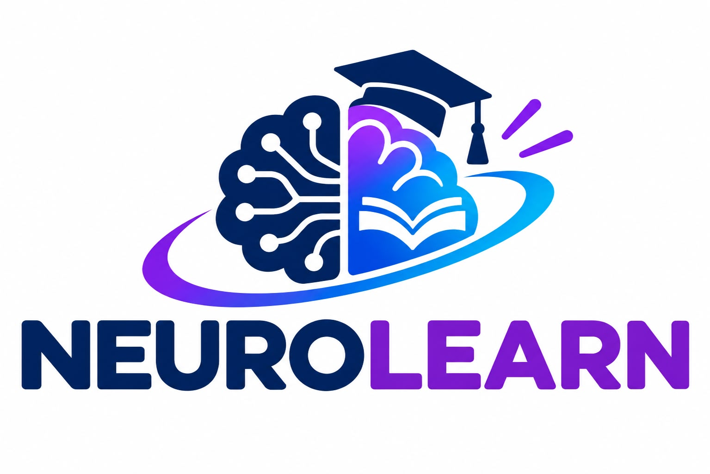

Conoce tu nivel
Realiza evaluaciones por materia y nivel para reconocer lo que ya dominas.

NeuroLearnUna plataforma educativa que ayuda a estudiantes y docentes a identificar avances, reconocer áreas de oportunidad y dar el siguiente paso en el aprendizaje.
NeuroLearn integra evaluaciones, seguimiento académico y recomendaciones para que cada estudiante pueda avanzar con mayor claridad.
Realiza evaluaciones por materia y nivel para reconocer lo que ya dominas.
Consulta los temas que requieren repaso y revisa recomendaciones de aprendizaje.
Los docentes revisan resultados y asignan actividades de acuerdo con las necesidades del grupo.
Facilitar experiencias de aprendizaje más claras e inclusivas mediante herramientas digitales que permitan evaluar conocimientos, identificar áreas de oportunidad y orientar el desarrollo académico.
Ser una plataforma educativa confiable e innovadora que contribuya a mejorar el aprendizaje y fortalezca la colaboración entre estudiantes y docentes.
La tecnología tiene sentido cuando se utiliza para apoyar a las personas.
Mejoramos la forma de aprender.
Respetamos los distintos ritmos.
Usamos la información con cuidado.
Valoramos a cada integrante.
Aprendemos en conjunto.
Explicamos resultados y recomendaciones.
Ingresa como estudiante o docente y explora las herramientas de NeuroLearn.